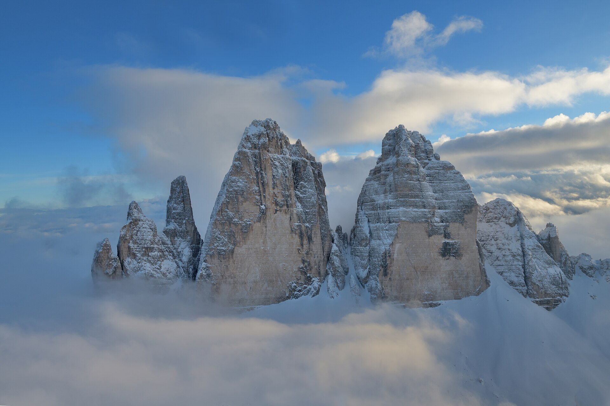

ÉLŐ / AKTÍV TÚRATERV
🏔️ Dolomitok Expedíció: 4 Napos Kalandterv
Komplett, logisztikailag összehangolt alpesi csillagtúra a Dolomitok szívében. Párhuzamos programok via ferrata sziklamászóknak és fotós-túrázóknak, délutáni közös hüttézésekkel és naplementékkel.
- Mászók: VF Michielli-Strobel, VF DeLuca-Innerkofler, VF Pisciadù, Piccolo Cir
- Túrázók: Tre Cime körtúra, Cadini di Misurina, Seceda gerinc, Lago di Braies
- Felszereltség: 12 GPX nyomvonal, szintrajzok, Waze parkolók, élő EUR árfolyam